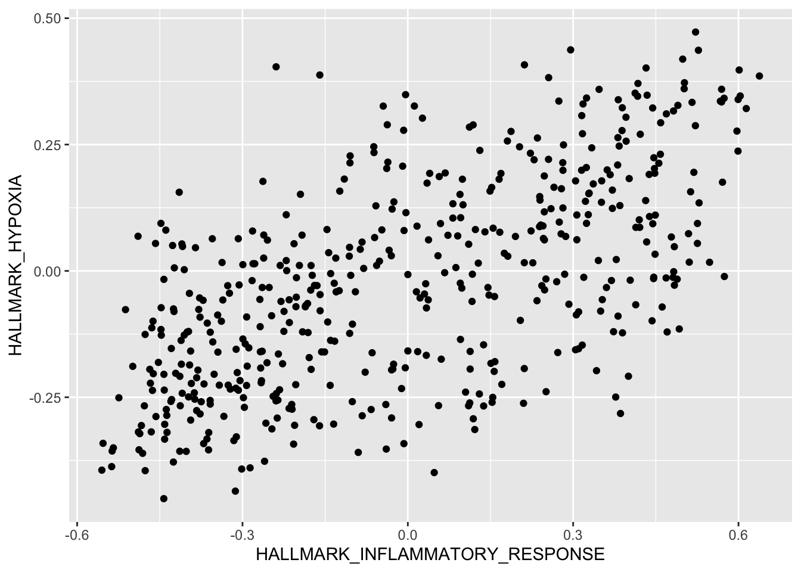
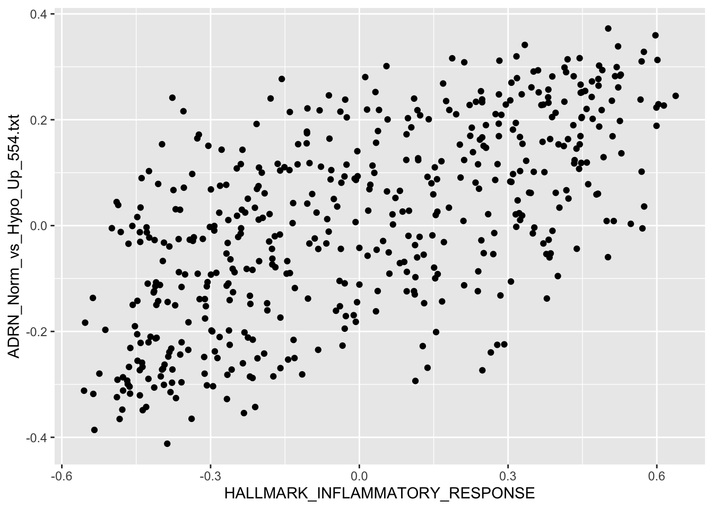

Exercises
Research with Computational Biology (ReComBio)
August 26, 2024
Part 1: Introduction to R and the R Syntax
Chapter 3: Data visualization
Load libraries
library(ggplot2)
library(maditr)
library(dplyr)
Load dataframe
r2_gse62564_GSVA_Metadata <- readRDS("../../ReComBio Scientific/ReComBio Book English/recombio bookdown/data/r2_gse62564_GSVA_Metadata.rds")
Make Variables of Numeric Type
r2_gse62564_GSVA_Metadata <- r2_gse62564_GSVA_Metadata %>%
mutate_at("HALLMARK_HYPOXIA", as.numeric) %>%
mutate_at("HALLMARK_INFLAMMATORY_RESPONSE", as.numeric) %>%
mutate_at("ADRN_Norm_vs_Hypo_Up_554.txt", as.numeric) %>%
mutate_at("ADRN_Norm_vs_Hypo_Down_635.txt", as.numeric)
Question 1
Use R plot functions to visualize the correlation between Hallmark Hypoxia and Hallmark Inflammatory Response
Solution:
HALLMARK_INFLAMMATORY_RESPONSE vs. HALLMARK_HYPOXIA
qplot(HALLMARK_INFLAMMATORY_RESPONSE, HALLMARK_HYPOXIA,
data = r2_gse62564_GSVA_Metadata,
#colour=quantile,
ylab = "HALLMARK_HYPOXIA",
xlab = "HALLMARK_INFLAMMATORY_RESPONSE")
Question 2
Use R plot functions to visualize the correlation between Hallmark Hypoxia and Hallmark Inflammatory Response
Solution:
HALLMARK_INFLAMMATORY_RESPONSE vs. ADRN_Norm_vs_Hypo_Up_554.txt
qplot(HALLMARK_INFLAMMATORY_RESPONSE, ADRN_Norm_vs_Hypo_Up_554.txt,
data = r2_gse62564_GSVA_Metadata,
# colour=quantile,
xlab = "HALLMARK_INFLAMMATORY_RESPONSE",
ylab = "ADRN_Norm_vs_Hypo_Up_554.txt")
Question 3
Use R plot functions to visualize the correlation between Hallmark Hypoxia and Hallmark Inflammatory Response
Solution:
HALLMARK_INFLAMMATORY_RESPONSE vs. ADRN_Norm_vs_Hypo_Down_635.txt
qplot(HALLMARK_INFLAMMATORY_RESPONSE, ADRN_Norm_vs_Hypo_Down_635.txt,
data = r2_gse62564_GSVA_Metadata,
# colour=quantile,
ylab = "ADRN_Norm_vs_Hypo_Down_635.txt",
xlab = "HALLMARK_INFLAMMATORY_RESPONSE")
Question 4
From the analysis of questions 1-3, choose the correct option:
HALLMARK_INFLAMMATORY_RESPONSE and HALLMARK_HYPOXIA have a positive correlation because hypoxia is always beneficial in the tumor microenvironment
HALLMARK_INFLAMMATORY_RESPONSE and ADRN_Norm_vs_Hypo_Up_554.txt have a positive correlation because hypoxia upregulation in this case, is beneficial in the tumor microenvironment
HALLMARK_INFLAMMATORY_RESPONSE and ADRN_Norm_vs_Hypo_Up_554.txt have a positive correlation because hypoxia upregulation has a negative impact on survival
HALLMARK_INFLAMMATORY_RESPONSE and ADRN_Norm_vs_Hypo_Down_635.txt have a negative correlation because hypoxia upregulation in this case, is not beneficial in the tumor microenvironment
Question 5
Which gene expression group has worse survival probability?
- High HIF1A expression
- Low HIF1A expression
Question 6
Which phenotype score group has worse survival probability?
- High Hallmark Hypoxia
- Low Hallmark Hypoxia
Question 7
Which phenotype score group has worse survival probability?
- High Hallmark Inflammatory Response
- Low Hallmark Inflammatory Response
Question 8
Plot the survival curve of the MYCN status variable. Which MYCN status has worse survival outcome?
- Individuals with MYCN amplification
- Individuals without MYCN amplification
- The MYCN group with unknown MYCN status
Question 9
Plot the survival curve of the INSS stage variable. Which INSS stage has worse survival outcome?
- INSS Stage I
- INSS Stage II
- INSS Stage III
- INSS Stage IV
- INSS Stage IV A
Question 10
Mark TRUE or FALSE.
- The higher the age at diagnosis the greater the HIF1A expression difference between HR and non-HR
- The lower the age at diagnosis the greater the HIF1A expression difference between HR and non-HR